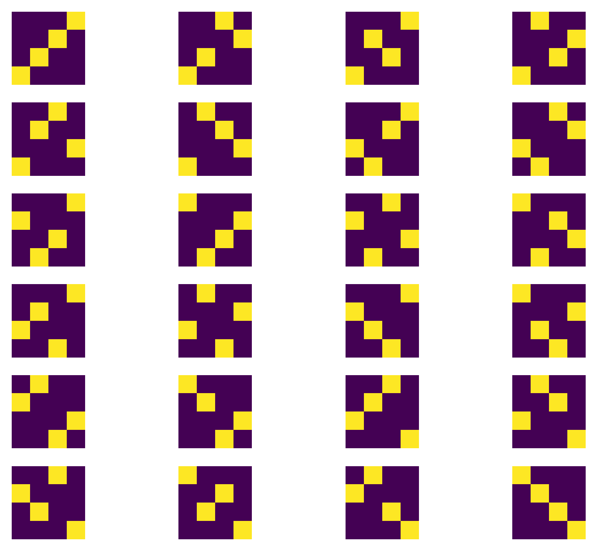

Introduction
This post is part of a collection of posts responding to various aspects of the following video:
In this video Dustin quotes me:
Quotation (Galen Seilis)
But the short version of my own opinion is that the rank transform preserves monotonicity, and estimators such as Spearman’s correlation tell us about comonotonicity of pairs of variables without the difficulties that come with modeling.
Dustin agreed with me that the rank transform preserves monotonicity, and by that we meant that ranks are order-preserving on the elements of a sample, but Dustin did not make any further comment on whether he agreed or disagreed that Spearman’s rank correlation quantifies comonotonicity. I think the point I was making about comonotonicity is worth unpacking and emphasizing further.
Comonotonicity
Comonotonicity is a description of a pair (or collection) of variables which go up and down together. Similarly, antimonotonicity is a description a pair of variables in which one increasing implies that the other is decreasing, and vice versa. Well, these are informal descriptions anyway. For further reading on more precisely-defined notions of comonotonicity see Puccetti & Scarsini 2009, but I will continue here with a less precise and more intuitive exposition.
Suppose you have four continuous random variables \[\{X_1, \ldots, X_4 \}\] representing an IID sample. You take a sample, you see four numbers, and you rank them. Since there is zero probability of tied ranks, you see that the ranks are always turn out to be a permutation of \((1,2,3,4)\). Here they are tabulated:
| \(\operatorname{rank}(X_1)\) | \(\operatorname{rank}(X_2)\) | \(\operatorname{rank}(X_3)\) | \(\operatorname{rank}(X_4)\) |
|---|---|---|---|
| 1 | 2 | 3 | 4 |
| 1 | 2 | 4 | 3 |
| 1 | 3 | 2 | 4 |
| 1 | 3 | 4 | 2 |
| 1 | 4 | 2 | 3 |
| 1 | 4 | 3 | 2 |
| 2 | 1 | 3 | 4 |
| 2 | 1 | 4 | 3 |
| 2 | 3 | 1 | 4 |
| 2 | 3 | 4 | 1 |
| 2 | 4 | 1 | 3 |
| 2 | 4 | 3 | 1 |
| 3 | 1 | 2 | 4 |
| 3 | 1 | 4 | 2 |
| 3 | 2 | 1 | 4 |
| 3 | 2 | 4 | 1 |
| 3 | 4 | 1 | 2 |
| 3 | 4 | 2 | 1 |
| 4 | 1 | 2 | 3 |
| 4 | 1 | 3 | 2 |
| 4 | 2 | 1 | 3 |
| 4 | 2 | 3 | 1 |
| 4 | 3 | 1 | 2 |
| 4 | 3 | 2 | 1 |
If you’re interested in tinkering, the above table is generated by the following code.
from itertools import permutations
import pandas as pd
perms = list(permutations(range(1,5)))
cols = [f'$\\operatorname{{rank}}(X_{i})$' for i in range(1,5)]
df = pd.DataFrame(data=perms, columns=cols)
print(df.to_markdown(index=False))Now what if you actually have paired samples of such continuous random variables \(\{(X_1, Y_1), \ldots, (X_4, Y_4) \}\)? As before each rank of an element of the sample gets a score in \(\{ 1, \ldots, 4 \}\) but now there are various ways that these integers get paired together. This rank space is like a checker board. There are \(4!=24\) possible arrangments of ranks for a bijection \[\{1, 2, 3, 4\} \mapsto \{1, 2, 3, 4\}\]. In the following visualization I show yellow squares indicating a pair is a member of the relation, i.e. function, and otherwise it is not a member of the relation. Or more plainly, this is a visualization of all of the samples that could (almost-surely) be realized.

If you would like to tinker with the figure, here is the source.
from itertools import permutations
import matplotlib.pyplot as plt
import numpy as np
from scipy.stats import pearsonr
corr = lambda x,y: pearsonr(x,y)[0]
fig, axes = plt.subplots(6,4)
axes = axes.flatten()
x = list(range(1,5))
perms = permutations(x)
for k, y in enumerate(perms):
img = np.zeros((4,4))
for i,j in zip(x,y):
img[i-1,j-1] = 1
axes[k].imshow(img, origin='lower')
axes[k].axis('off')
axes = axes.reshape((6,4))
plt.tight_layout()
plt.savefig("perm_grid.png", bbox_inches='tight', dpi=300, transparent=True)
plt.close()Spearman’s Correlation
What is important to understand about Spearman’s correlation is that it is minimized by the two variables having a perfect antimonotone relationship and it is maximized by having a monotone relationsip on the original variables. As the Spearman’s correlation is the Pearson product-moment correlation coefficient on the ranks, we can likewise say that perfect linearity on the ranks implies perfect monotonicty on the preimage of the ranks (i.e. the unranked variables).
Note that I am only talking about the Spearman’s correlation coefficient, which is not the same thing as null hypothesis significance testing procedures that make use of the Spearman’s correlation coefficient.
Practical Relevance
What’s the relevance of monotonicity as opposed to linearity? First, they’re different. All linear relationships are monotonic but not all monotonic relationships are linear. Okay,that’s math. What might a scientist or other user of statistics care about? Well, I find that scientists often don’t care about linearity per se. They don’t often use the terms “monotonic” or “antimonotonic”, but I frequently hear or read about scientists being interested in what variables tend to increase together or the situation in which when one variable increases the other one decreases. Linear models happen to (1) be well-developed mathematically, (2) have well-supported software packages with communities around them, (3) fit well-enough to be useful, and (4) are relatively easy to interpret. I’m sure there are other reasons, but that is a good start. When I used to work in ecotoxicology research I was privy to discussions, notes, and presentations that used notation as follows.
The expression
\[\uparrow X \uparrow Y\]
denoted “when \(X\) goes up, so does \(Y\), and vice versa”. Sometimes it was written a more directional, possibly causal, way:
\[\uparrow X \rightarrow \uparrow Y.\]
And you could probably anticipate that there was an antimonotone equivalent:
\[\uparrow X \downarrow Y.\]
And sometimes they were written in groups of variables like this:
\[\uparrow X \uparrow Z \downarrow Y \downarrow W\]
or with brackets
\[\uparrow (X Z) \downarrow (Y W).\]
While Spearman’s correlation is only for pairs of variables, it is a tool that actually speaks more directly to what goes up-and-down-in-combination than does linearity. While it has limitations like any tool, I think it is quantifies something relevant to the interests of scientists and practitioners of statistics.
Avoiding Difficulties Of Modelling
In addition to the first quote in this post that mentions avoiding the difficulties of modelling, I said in one the comments that Dustin quoted in his video:
Quotation (Galen Seilis)
This impracticality sometimes comes from scalability issues, and other times it is because of difficulties that come with accurately estimating curvature in the presence of noise.
Scalability Issues & Curvature In The Presence Of Noise
If we’re interested in the pairwise monotonicty relationships between pairs of variables, tools like Spearman’s correlation coefficient can save us some effort.
This is especially the case when there are a large number of variables. I’ve worked with data sets with thousands of variables, making the computation of hundreds-of-thousands to tens-of-millions of correlations possible-but-annoying. This is a data mining exercise, and data mining is fine provided that reasonable steps are taken to avoid information/data leakage. It helps you identify patterns in data and begin to create hypotheses for future work. It likewise helps prioritize our attention to those monotonic patterns that we humans tend to care about.
There are data mining tools that can help identify non-monotonic patterns in data as well. For example, one can automatically pull out the top dominating frequencies from power spectra of stochastic processes. This is often accomplished with various modifications of fast Fourier transforms.
Spearman’s correlation facilitates exploring monotonicity in a relatively feasible way compared to trying to fit various curves per pair of variables and evaluate which one did best.
If two variables are related by a function with substantial curvature it can be difficult to identify it from noisy data. When we’re just interested in discovering potential pairwise monotone relationships between variables it saves us effort in not needing to get the curvature
Conclusions
Spearman’s rank correlation allows us to quantify a tendency for two variables to change monotonically or antimonotonically, which is of interest to scientists and other practitioners of statistics. It also can save modelling effort when there are a large number of variables and/or the mathematical structure is not readily identifiable from the data.